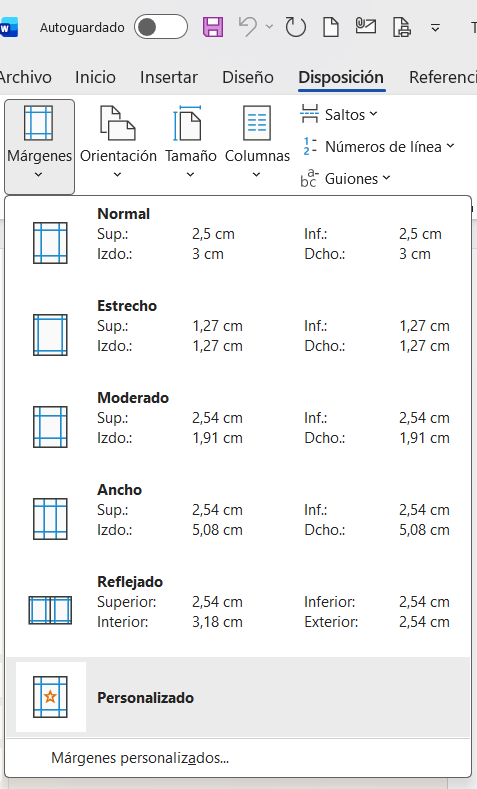

Configuración de página e impresión
Configura márgenes, orientación y tamaño de papel. Revisa e imprime tus documentos listos para entregar a clientes.
Configurar márgenes
Los márgenes son el espacio en blanco alrededor del texto. Un buen margen hace que el documento se vea profesional.
- Ve a Disposición > Márgenes.
- Word ofrece opciones predefinidas: Normal, Estrecho, Moderado, Ancho.
- Para la carta de entrega, usa Normal (2.5 cm en todos los lados).
- Para personalizar: Márgenes personalizados e introduce los valores deseados.

Figura 1. Opciones de márgenes en la pestaña DisposiciónOrientación y tamaño de papel
Orientación vertical
La hoja es más alta que ancha. Es la estándar para cartas, recibos y facturas.
Ve a Disposición > Orientación > Vertical.
Orientación horizontal
La hoja es más ancha que alta. Ideal para tablas anchas con muchos productos.
Ve a Disposición > Orientación > Horizontal.
Tamaño de papel
En nuestra región se usa principalmente A4 (21 cm × 29.7 cm).
Ve a Disposición > Tamaño > A4 para asegurarte.
Columnas
Divide el texto en columnas tipo periódico. Útil para listas de precios compactas.
Ve a Disposición > Columnas.
Vista previa de impresión
Siempre revisa antes de imprimir. La vista previa te muestra exactamente cómo quedará en papel:
- Ve a Archivo > Imprimir o presiona Ctrl + P.
- A la derecha verás una previsualización de cada página.
- Usa los botones debajo para pasar páginas y acercar/alejar.
- Revisa que:
- El logo se vea bien posicionado
- La tabla no esté cortada
- El encabezado y pie de página sean correctos
- No haya texto fuera de los márgenes
 Figura 2. Vista previa de impresión antes de imprimir
Figura 2. Vista previa de impresión antes de imprimir
Imprimir el documento
Una vez revisado todo, es momento de imprimir:
- Ve a Archivo > Imprimir (Ctrl + P).
- Configura las opciones de impresión:
- Impresora: Selecciona la impresora disponible.
- Copias: ¿Cuántas copias necesitas? Para el cliente y para tu archivo.
- Páginas: Puedes imprimir todo, la página actual o un rango (ej: 1-3).
- Color: Si tu logo tiene color, elige impresión en color.
- A una cara / A doble cara: Para ahorrar papel en documentos internos.
- Haz clic en Imprimir.
Lista de verificación antes de imprimir
Usa esta lista cada vez que vayas a imprimir una carta de entrega para tus clientes:
| Elemento a revisar | Correcto |
|---|---|
| Encabezado con logo y nombre de la empresa visibles | Sí / No |
| Nombre del cliente escrito correctamente | Sí / No |
| Tabla de productos con cantidades y precios correctos | Sí / No |
| Total a pagar claramente visible | Sí / No |
| Ortografía revisada (F7) | Sí / No |
| Márgenes uniformes, sin texto cortado | Sí / No |
| Membrete de pie de página presente | Sí / No |
Ejercicio práctico
Completa la lista de pasos para imprimir correctamente un documento.
1. Antes de imprimir, reviso la previa con Ctrl + P.
2. Para una tabla con muchas columnas, uso orientación .
3. El tamaño de papel estándar que debo seleccionar es .
4. Los márgenes recomendados para una carta formal son los (2.5 cm).